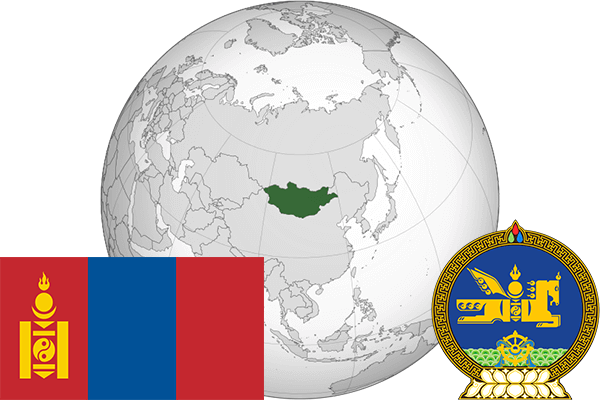

To`liq nomi: Moʻgʻuliston
Region: Markaziy Osiyo
Qonunchilik shakli: Parlamentar respublika
Mustaqillik kuni: 11-iyul 1921-yil
Poytaxt: Ulan-Bator
Maydoni: 1 564 116 km²
Chegaradosh davlatlari: Xitoy, Rossiya, Qozog’iston
Aholisi: 3 119 935 (2016)
Aholi zichligi: 1.99 /км²
Aholining o`rtacha yoshi: 67,3
Rasmiy tili: Mongol tili
Dini: Buddizm
Pul birligi: Tugrik (MNT)
Telefon prefiksi: +976
Internet domen: .mn
Xalqaro tashkilotlarga a`zoligi: BMT (1961-yil)
Dengiz va okeanlarga chiqishi: Yo’q
YIM: Butun: $ 10,27 mlrd. Jon boshiga: $ 3 673
Yirik shaharlari: Ulan-Bator, Ulgiy